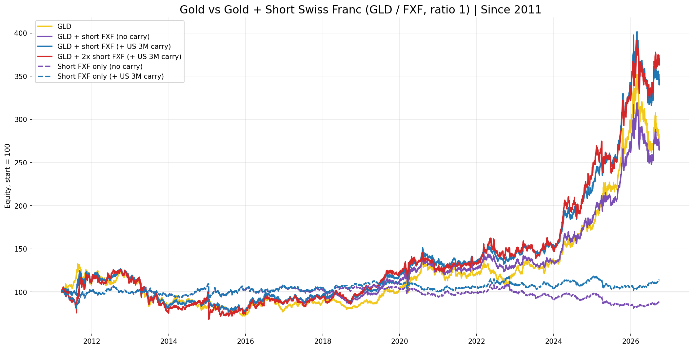
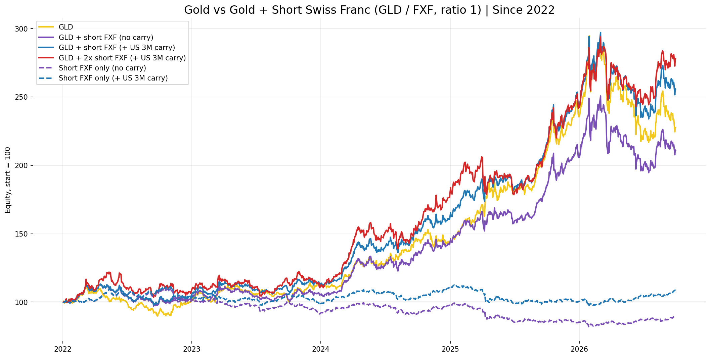
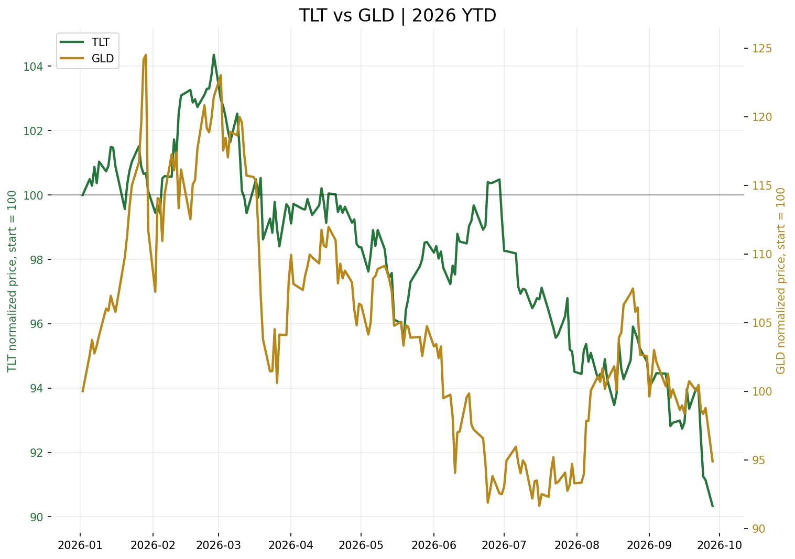
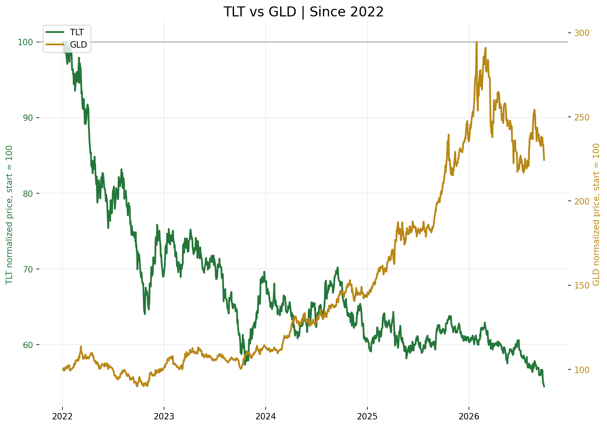
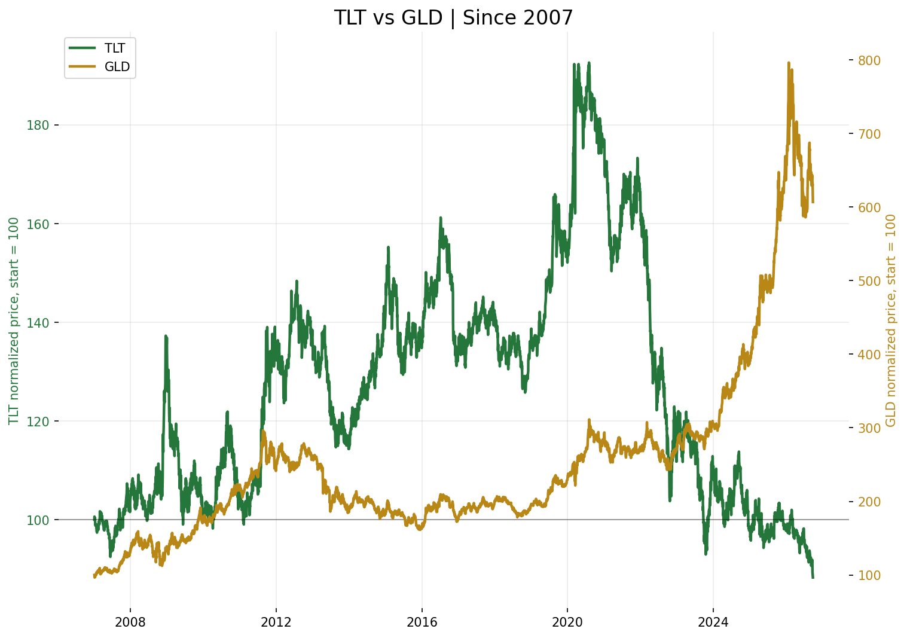
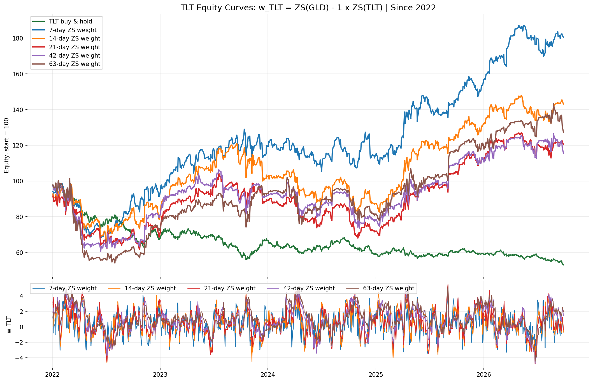
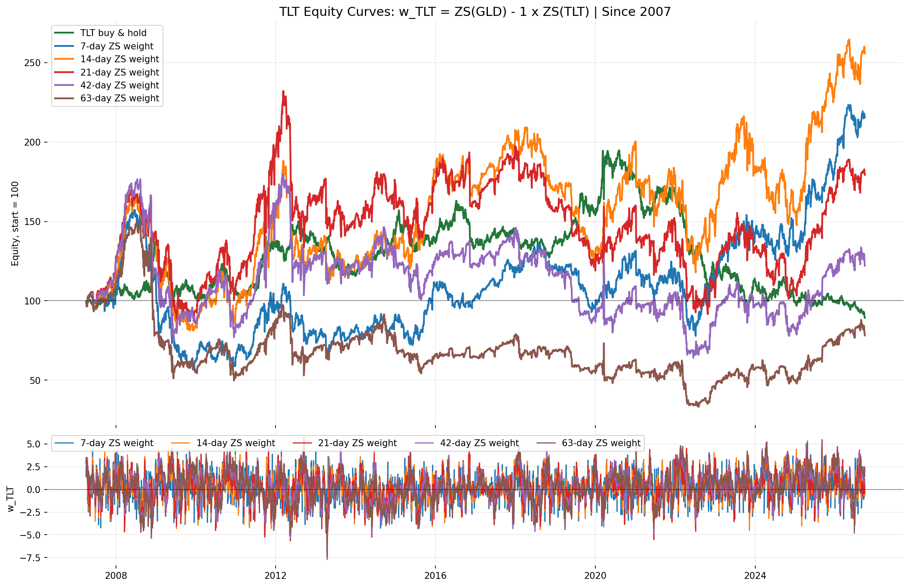
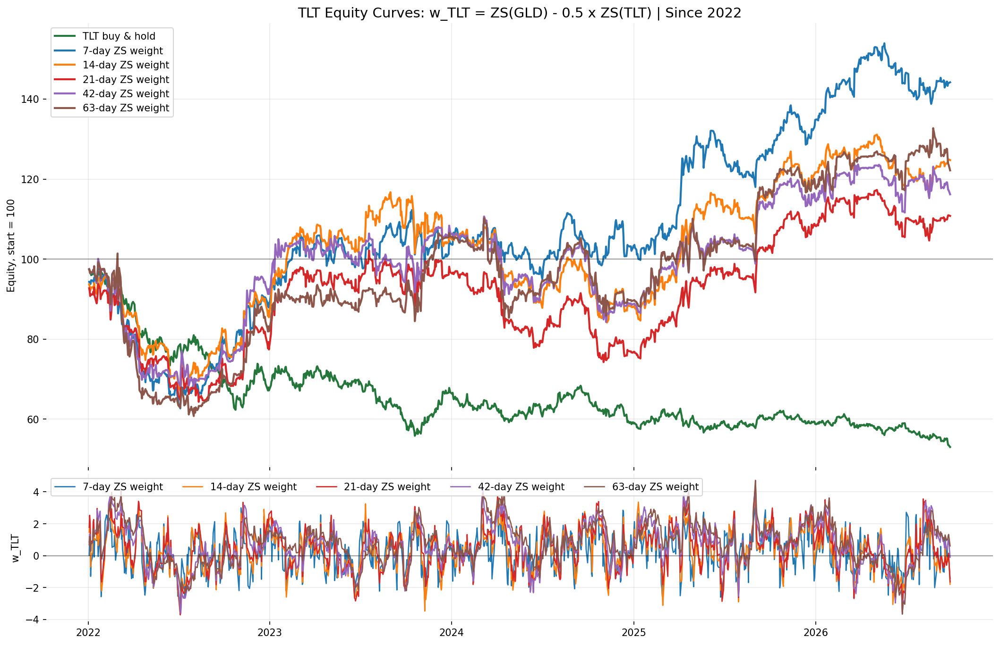
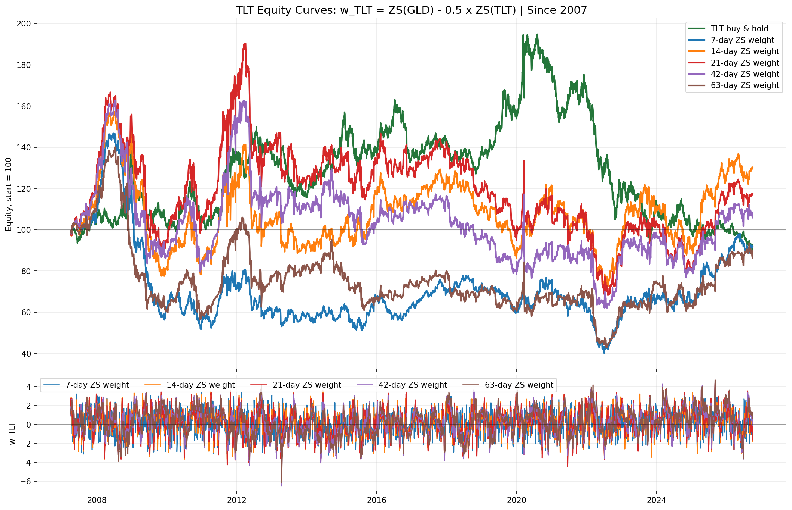

- We compare Gold and the Swiss franc (CHF): the two are visually correlated (first chart).
- Does Gold predict CHF? Yes, to some extent. Trading FXF (the CHF ETF) on the gold signal beats simply holding FXF: Sharpe about 0.4 versus 0.0 since 2011, and 0.7 versus 0.24 since 2022.
- Does CHF predict Gold? No. Trading GLD on the CHF signal does worse than simply holding GLD.
- Gold + short CHF: shorting the franc on top of gold does not add return by itself (Sharpe 0.47, same as gold alone) but it lowers the risk a little: volatility 16.2% versus 16.8% (17.5% versus 19.2% since 2022) and drawdown -39% versus -46%. Adding the carry (US interest on the short) lifts it to 0.57 since 2011, and to 1.21 versus 0.99 since 2022. The gain comes from carry, not from the franc direction.
- Watch the fees: the edge is thin and the strategy trades every day. It stops working at roughly 1 to 2 bp of cost per trade (break-even about 1.4 bp since 2011, about 1.8 to 2.7 bp since 2022).
GC=F, a stitched nearby COMEX gold-futures quote,
normalized to 100 at the common starting date. The yellow line is the GLD ETF,
which tracks it closely but closes at 16:00 New York.
CHF=X is USD/CHF. Its chart axis is inverted, so an
upward red line represents a stronger franc. The green line is FXF, the
long-CHF ETF (carry included); the dashed green line is 1/FXF on the
same inverted axis, for comparison with spot.
Initial comparison
The top panel deliberately mirrors the earlier TLT-USO chart: gold is on the left axis and USD/CHF is on an inverted right axis. The lower panel keeps the interest-rate differential separate because it is a yield spread, not a price.

US_3M identifier with the recent
United States_3M continuation. The green line is the normalized
FXF ETF; the dashed green line is 1/FXF on the inverted axis.
First observations
- Gold and CHF strength share some broad defensive episodes, but their paths are not equivalent.
- The US 3M yield has generally remained above the Swiss 3M yield, especially from 2022 onward.
- Gold rose strongly alongside a wide positive US-Swiss carry differential, so the spread alone cannot explain gold's level.
- The carry-adjusted CHF investment can materially lag the visual inverted USD/CHF line when the US rate advantage is large.
- The relationship appears regime-dependent and should be tested on changes or returns, not inferred from two trending price levels.
Delta-Z-score backtest on GLD and FXF
ZS_N is the N-day rolling z-score of log prices, N = 7, 14, 21, and
dZS_N its daily change. Both ETFs trade on NYSE Arca and close at
16:00 New York, so signals and returns are synchronized; FXF's NAV already accrues
CHF deposit interest. The weight at the close of day t is applied to the next day's
return; zero costs unless stated.
Gold >> CHF: trade FXF
w_FXF(t) = +( dZS_N(GLD,t) - dZS_N(FXF,t) )


| Since 2011 | End equity | CAGR | Sharpe | Sharpe @ 1 bp | Max DD |
|---|---|---|---|---|---|
| FXF buy & hold | 93 | -0.5% | 0.00 | 0.00 | -36% |
| 7-day | 109 | 0.5% | 0.10 | -0.20 | -29% |
| 14-day | 133 | 1.9% | 0.26 | -0.03 | -28% |
| 21-day | 119 | 1.1% | 0.19 | -0.08 | -21% |
| Since 2022 | End equity | CAGR | Sharpe | Sharpe @ 1 bp | Max DD |
|---|---|---|---|---|---|
| FXF buy & hold | 108 | 1.7% | 0.24 | 0.24 | -10% |
| 7-day | 117 | 3.5% | 0.40 | 0.08 | -13% |
| 14-day | 129 | 5.6% | 0.66 | 0.39 | -7% |
| 21-day | 112 | 2.4% | 0.34 | 0.10 | -10% |
Gold >> CHF with lambda = 0: trade FXF on the gold signal alone
w_FXF(t) = +( dZS_N(GLD,t) - 0 x dZS_N(FXF,t) )


| Since 2011 | End equity | CAGR | Sharpe | Sharpe @ 1 bp | Max DD |
|---|---|---|---|---|---|
| FXF buy & hold | 93 | -0.5% | 0.00 | 0.00 | -36% |
| 7-day | 108 | 0.5% | 0.10 | -0.22 | -27% |
| 14-day | 151 | 2.7% | 0.40 | 0.11 | -17% |
| 21-day | 144 | 2.4% | 0.42 | 0.13 | -15% |
| Since 2022 | End equity | CAGR | Sharpe | Sharpe @ 1 bp | Max DD |
|---|---|---|---|---|---|
| FXF buy & hold | 108 | 1.7% | 0.24 | 0.24 | -10% |
| 7-day | 118 | 3.6% | 0.44 | 0.12 | -17% |
| 14-day | 127 | 5.2% | 0.70 | 0.43 | -11% |
| 21-day | 111 | 2.2% | 0.37 | 0.10 | -15% |
CHF >> Gold: trade GLD
w_GLD(t) = +( dZS_N(FXF,t) - dZS_N(GLD,t) )


| Since 2011 | End equity | CAGR | Sharpe | Sharpe @ 1 bp | Max DD |
|---|---|---|---|---|---|
| GLD buy & hold | 262 | 6.4% | 0.46 | 0.46 | -46% |
| 7-day | 118 | 1.1% | 0.15 | -0.01 | -48% |
| 14-day | 59 | -3.4% | -0.16 | -0.32 | -65% |
| 21-day | 44 | -5.2% | -0.33 | -0.48 | -69% |
| Since 2022 | End equity | CAGR | Sharpe | Sharpe @ 1 bp | Max DD |
|---|---|---|---|---|---|
| GLD buy & hold | 227 | 19.3% | 1.01 | 1.01 | -26% |
| 7-day | 97 | -0.6% | 0.08 | -0.06 | -46% |
| 14-day | 75 | -5.9% | -0.27 | -0.41 | -46% |
| 21-day | 83 | -4.0% | -0.19 | -0.31 | -36% |
CHF >> Gold with a zero GLD coefficient: trade GLD on the FXF signal alone
w_GLD(t) = +( dZS_N(FXF,t) - 0 x dZS_N(GLD,t) )


| Since 2011 | End equity | CAGR | Sharpe | Sharpe @ 1 bp | Max DD |
|---|---|---|---|---|---|
| GLD buy & hold | 262 | 6.4% | 0.46 | 0.46 | -46% |
| 7-day | 84 | -1.1% | 0.01 | -0.16 | -55% |
| 14-day | 65 | -2.7% | -0.14 | -0.30 | -52% |
| 21-day | 61 | -3.1% | -0.22 | -0.38 | -52% |
| Since 2022 | End equity | CAGR | Sharpe | Sharpe @ 1 bp | Max DD |
|---|---|---|---|---|---|
| GLD buy & hold | 227 | 19.3% | 1.01 | 1.01 | -26% |
| 7-day | 81 | -4.5% | -0.14 | -0.28 | -43% |
| 14-day | 66 | -8.5% | -0.48 | -0.62 | -41% |
| 21-day | 72 | -6.8% | -0.44 | -0.57 | -34% |
GC=F, CHF=X and a carry proxy looked
strong, but that came from Yahoo's USD/CHF being stamped about one day after gold.
Holding gold with a short Swiss franc position
A simple static test, no signal: hold GLD, and also short the same amount of FXF (1:1 notional, rebalanced daily). Two versions (plus a 2x short with carry): no carry (only the price moves of GLD and FXF) and + carry (adding the US 3M interest earned on the cash from the short). FXF's price already includes the Swiss deposit rate. Dashed lines show the short FXF position alone.

| Since 2011 | End equity | CAGR | Volatility | Sharpe | Max DD |
|---|---|---|---|---|---|
| GLD | 273 | 6.7% | 16.8% | 0.47 | -46% |
| GLD + short FXF (no carry) | 267 | 6.5% | 16.2% | 0.47 | -39% |
| GLD + short FXF (+ carry) | 343 | 8.3% | 16.2% | 0.57 | -39% |
| GLD + 2x short FXF (+ carry) | 367 | 8.7% | 20.8% | 0.51 | -46% |
| Short FXF only (no carry) | 89 | -0.8% | 9.8% | -0.03 | -26% |
| Short FXF only (+ carry) | 114 | 0.9% | 9.8% | 0.14 | -22% |

| Since 2022 | End equity | CAGR | Volatility | Sharpe | Max DD |
|---|---|---|---|---|---|
| GLD | 224 | 18.6% | 19.2% | 0.99 | -26% |
| GLD + short FXF (no carry) | 209 | 16.9% | 17.5% | 0.98 | -22% |
| GLD + short FXF (+ carry) | 254 | 21.7% | 17.5% | 1.21 | -21% |
| GLD + 2x short FXF (+ carry) | 278 | 24.0% | 19.7% | 1.20 | -17% |
| Short FXF only (no carry) | 90 | -2.1% | 8.5% | -0.21 | -26% |
| Short FXF only (+ carry) | 110 | 2.0% | 8.5% | 0.27 | -14% |
Data construction
Rates come from market_dashboard.bond_yield_history_daily.
Switzerland_3M begins on 24 March 2011. The historical US series
US_3M ends on 14 September 2026 and is continued with
United States_3M from 15 September 2026. Both source tables and
market prices are saved locally before plotting.
Instruments
The top chart shows the gold future (GC=F) next to the GLD ETF, and
the spot franc (CHF=X, inverted axis) next to FXF and 1/FXF.
The CHF backtests use GLD and FXF; the TLT rerun uses GLD and TLT. All three
ETFs are priced at the 16:00 New York close.
FXF drifts below spot CHF because it pays the (low or negative) CHF deposit rate
and a fee, so it already reflects the carry cost that a spot series ignores.
Next tests
- Measure rolling correlations using gold returns and changes in CHF value rather than price levels.
- Test whether changes in the 3M differential lead CHF or gold over 1, 5, 21 and 63 trading days.
- Separate risk-off shocks from monetary-policy regimes using volatility and equity controls.
- Compare gold in USD with gold in CHF to distinguish gold exposure from dollar exposure.
- Use walk-forward tests before converting any relationship into a trading signal.
Appendix: GLD >> TLT
Trade TLT using the spread between rolling log-price z-score levels. ZS_N(X,t) = (log P_X(t) - rolling mean_N) / rolling std_N, with N = 7, 14, 21, 42 and 63 trading days. The main specification is lambda = 1; lambda = 0.5 is a sensitivity test. GLD and TLT are displayed on non-inverted axes to compare moves in the same direction. w_TLT is the signed TLT notional divided by portfolio equity. The close-of-day weight is applied to the next trading day's TLT return.
w_TLT(t) = ZS_N(GLD,t) - lambda x ZS_N(TLT,t)
lambda = 1: w_TLT = zs_GLD - zs_TLT
Z-score levels are used here; the USO test uses daily changes in z-scores. Their results therefore compare different signals.



Z-score spread weighting, lambda = 1.0


Z-score spread weighting, lambda = 0.5


| Period | Window | lambda | End equity | CAGR | Sharpe | Max DD | Turnover / yr | Max |w_TLT| |
|---|---|---|---|---|---|---|---|---|
| Since 2022 | TLT B&H | - | 53 | -12.5% | -0.78 | -45.5% | 0x | 1.00x |
| Since 2022 | 7D | 1.0 | 180 | 13.3% | 0.65 | -34.0% | 239x | 4.31x |
| Since 2022 | 14D | 1.0 | 143 | 7.9% | 0.43 | -33.0% | 183x | 5.03x |
| Since 2022 | 21D | 1.0 | 120 | 4.0% | 0.28 | -34.9% | 154x | 5.46x |
| Since 2022 | 42D | 1.0 | 116 | 3.1% | 0.25 | -39.1% | 111x | 5.33x |
| Since 2022 | 63D | 1.0 | 127 | 5.2% | 0.32 | -46.8% | 90x | 5.32x |
| Since 2022 | 7D | 0.5 | 144 | 8.0% | 0.50 | -35.7% | 190x | 3.21x |
| Since 2022 | 14D | 0.5 | 125 | 4.8% | 0.33 | -29.9% | 144x | 3.88x |
| Since 2022 | 21D | 0.5 | 111 | 2.2% | 0.21 | -31.5% | 121x | 4.37x |
| Since 2022 | 42D | 0.5 | 116 | 3.2% | 0.25 | -31.9% | 87x | 4.40x |
| Since 2022 | 63D | 0.5 | 122 | 4.3% | 0.30 | -40.1% | 70x | 4.72x |
| Since 2007 | TLT B&H | - | 89 | -0.6% | 0.04 | -54.2% | 0x | 1.00x |
| Since 2007 | 7D | 1.0 | 215 | 4.0% | 0.29 | -64.0% | 247x | 4.45x |
| Since 2007 | 14D | 1.0 | 256 | 4.9% | 0.32 | -51.2% | 186x | 5.05x |
| Since 2007 | 21D | 1.0 | 179 | 3.0% | 0.25 | -60.6% | 157x | 5.74x |
| Since 2007 | 42D | 1.0 | 122 | 1.0% | 0.17 | -64.3% | 115x | 7.73x |
| Since 2007 | 63D | 1.0 | 78 | -1.3% | 0.09 | -77.9% | 94x | 7.42x |
| Since 2007 | 7D | 0.5 | 92 | -0.4% | 0.07 | -72.7% | 195x | 3.38x |
| Since 2007 | 14D | 0.5 | 130 | 1.4% | 0.17 | -55.5% | 146x | 4.02x |
| Since 2007 | 21D | 0.5 | 118 | 0.8% | 0.15 | -64.1% | 123x | 4.82x |
| Since 2007 | 42D | 0.5 | 106 | 0.3% | 0.12 | -61.8% | 88x | 6.53x |
| Since 2007 | 63D | 0.5 | 86 | -0.8% | 0.07 | -69.4% | 72x | 6.14x |